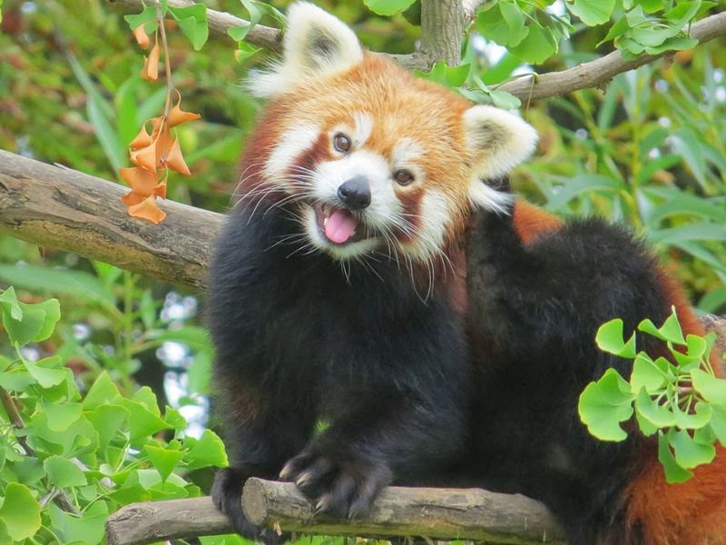

Gấu trúc đỏ
Tên tiếng anh: Red Panda

Gấu trúc đỏ, còn được gọi là Cáo lửa (Firefox) hay Gấu trúc nhỏ (Lesser Panda), (danh pháp khoa học là Ailurus fulgens), là loài động vật có vú ăn cỏ, đặc biệt là ăn lá tre. Nó nhỉnh hơn mèo nhà một chút (dài khoảng 40-60 cm, nặng khoảng 3-6 kg). Đây là loài đặc hữu của dãy núi Himalaya ở Bhutan, Nam Trung Quốc (Vân Nam), Ấn Độ (các bang Assam, Sikkim), Myanma và Lào. Người ta ước tính loài này hiện còn ít hơn 10.000 cá thể trưởng thành, nhưng số lượng có xu hướng giảm dần do môi trường sống bị phá hoại và trùng huyết, dù gấu trúc đỏ được bảo vệ̉ ở các quốc gia mà chúng sinh sống.
Tên "Red Panda" (gấu trúc đỏ) trong tiếng Anh bắt nguồn từ tiếng Himalaya: "panda" được đọc trại đi từ "poonya", nghĩa là "loài vật ăn lá tre". Gấu trúc đỏ còn được gọi là Wah dựa theo tiếng kêu đặc biệt của chúng. Tên này được Thomas Hardwicke đặt khi ông giới thiệu về chúng cho các nước châu Âu năm 1821. Loài này cũng được gọi là "Gấu Mèo" (Cat Bear) bởi ban đầu người ta cho rằng nó có họ hàng với gấu đồng thời lại có tập tính liếm sạch cơ thể giống mèo. Các tên khác của chúng bao gồm: "Mèo Gấu", "Gấu Trúc Sáng", "Gấu Trúc Nhỏ", "Cáo Lửa", "Cáo Đỏ", "Gấu Cáo", "Chồn Himalaya", "Cokoloaca Pigara", "Gambawarella", "Nigalya Ponya", "Gấu Trúc Chico", "Gấu Trúc Éclatant", "Gấu Trúc Rojo", "Gấu Trúc Petit", "Poonya", "Mèo Đỏ", "Sankam", "Thokya", "Wokdonka", "Woker" và "Ye".